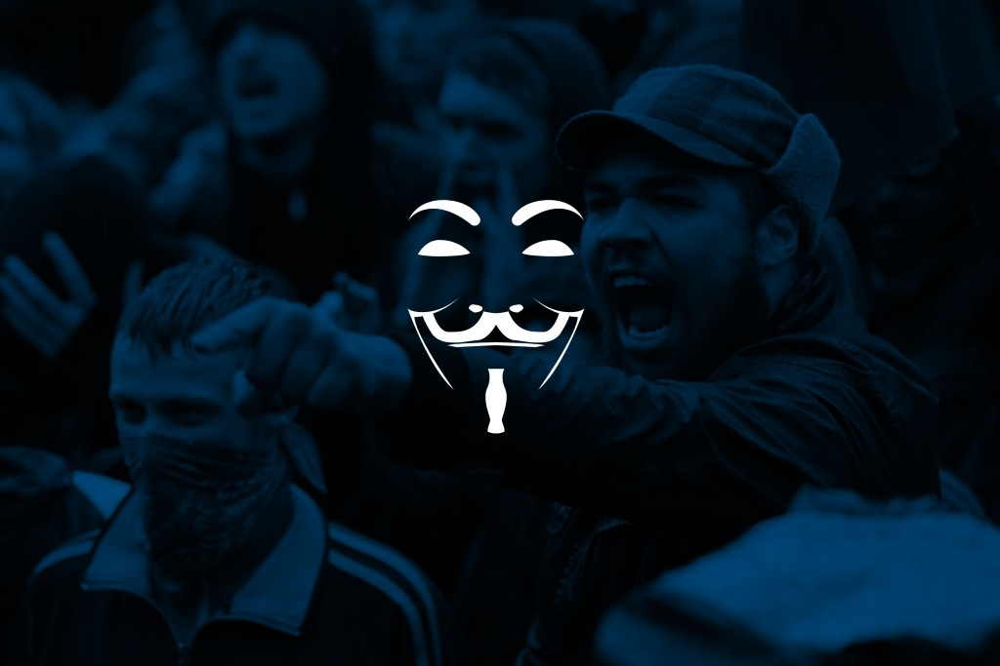

Anonymous puts target on crypto boss who oversaw $40bn price crash
Anonymous has pledged to bring a crypto boss “to justice” after he oversaw a market collapse that wiped more than $40bn from investors’ holdings.
The online hacking collective made the threat in the latest video posted to its official YouTube channel, accusing the co-founder of Terraform Labs of syphoning off the funds of retail investors who had bought the platform’s Terra (Luna) and TerraUSD (UST) tokens.
Kwon Do-hyung, known as Do Kwon, has previously denied these allegations, though more than 1,600 investors have signed up for a class-action lawsuit against him after both Luna and UST collapsed in price last month.
“The actions of Do Kwon, the founder of the Terra Luna ecosystem, is single-handedly responsible for scamming billions of dollars away from retail investors,” the video stated.
“Do Kwon made a name for himself with his arrogant tactics, trolling competitors, critics and acting like he would never fail ... However, he was quickly knocked down by the markets. The louder they are, the harder they tend to fall.”
Anonymous accused Do Kwon of cashing out billions of dollars worth of investor funds – something that he has publicly denied.
In a recent Twitter post, the crypto boss described the accusations as “categorically false”, saying that he “lost most of what I had in the crash too”.
In its video, Anonymous claims that there is “significant evidence that Do Kwon had bad intentions from the start”, though no evidence is shared.
“It is obvious to us that Do Kwon has plenty of secrets and he has been very sloppy in his execution,” the video concludes.
“Anonymous is looking into Do Kwon’s entire history since he entered the crypto space to see what we can learn and bring to light ... The only thing that we can do is hold [Do Kwon] accountable and make sure that [he] is brought to justice as soon as possible.”